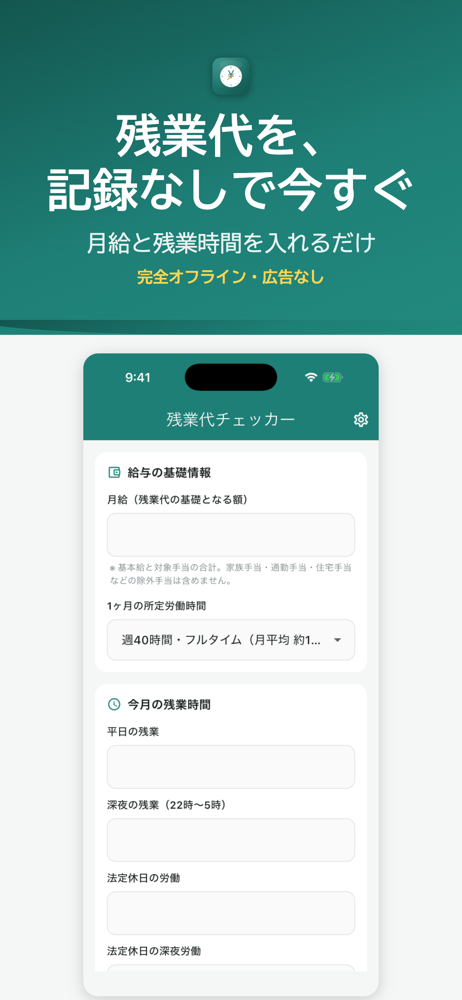
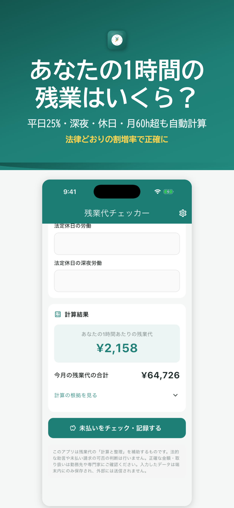
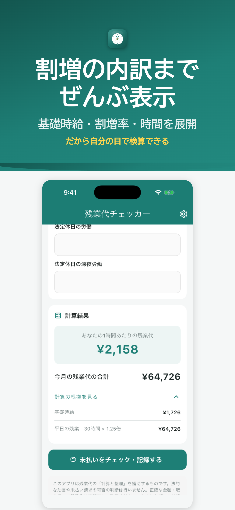
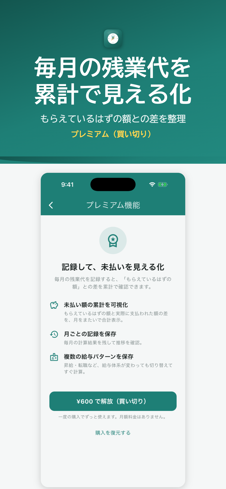
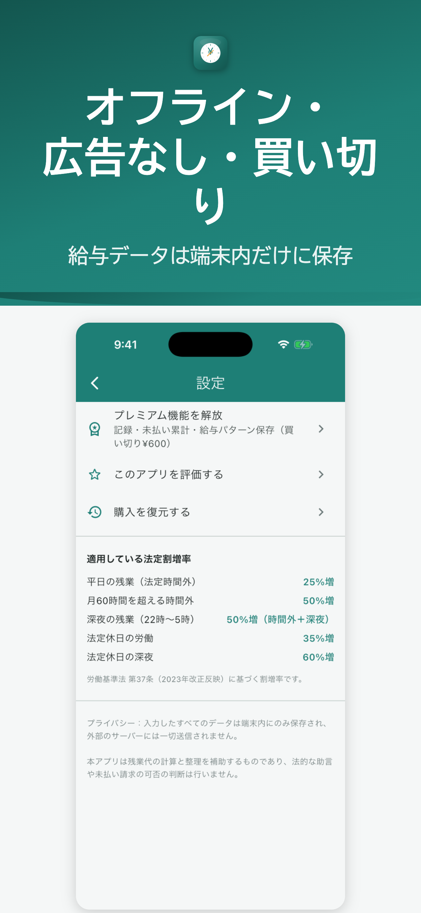

月給と残業時間を入れるだけ。
平日25%・深夜・休日・月60時間超の割増を
法律どおりに自動計算。記録は一切不要。
※ 月60時間残業・深夜労働ありの試算例。差額は個人の給与条件により異なります。





基礎時給（残業単価）を自動で算出します
平日・深夜・休日など内訳を選ぶだけ
法定割増を反映した金額をすぐ確認できます
月給と所定労働時間を入れるだけで、残業代の単価になる「基礎時給」を自動計算します。
平日25%・深夜+25%・法定休日35%・月60時間超+25%まで、2023年改正に対応して自動計算します。
時給・割増率・内訳を展開して表示。給与明細と突き合わせて自分で検算できます。
「あなたの1時間の残業＝◯◯円」をひと目で確認できます。
| 労働の種類 | 割増率 |
|---|---|
| 時間外労働（平日の残業） | 25%以上 |
| 深夜労働（22時〜翌5時） | +25%以上 |
| 法定休日労働 | 35%以上 |
| 月60時間超の時間外労働 | 50%以上 |
※ 2023年4月の改正（中小企業の月60時間超50%）に対応しています。
累計で「もらえているはず」との差額を可視化
労基署・会社への相談用に整理して保存
昇給・転職があっても切り替えて記録
※ 基礎時給の算出・割増計算・その場の残業代チェックは
無料でご利用いただけます。
入力した給与データは端末の外に一切送信されません
広告表示のためのトラッキングもありません
アカウント登録不要、サーバーへの送信もありません
無料でダウンロードして、今月の残業代を計算してみましょう。
App Storeで無料ダウンロードiPhone対応 · 完全オフライン · 広告なし